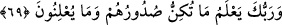
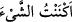
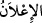
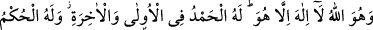
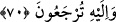
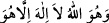
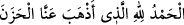
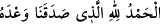

69. Rabbin, onların, sînelerinde gizlediklerini de, açığa vurduklarını da bilir.
“Rabbin, onların” Rasûlüne düşmanlık ve mü’minlere kin tutmak gibi “sînelerinde”
kalplerinde “gizlediklerini de,”
Bir şeyi içinde gizlediğin zaman: “__WORD__ (Falan şeyi gizledim)” denir. Herhangi
bir şeyi evde, elbise içinde veya başka bir yerde sakladığın zaman “__WORD__ (Falan şeyi
örttüm, sakladım),” denir.
Onların peygamberliği ta’n etmek ve Kur’ân’ı yalanlamak gibi dilleri ve âzâlarıyla
“açığa vurduklarını da bilir.”
“__WORD__; ortaya çıkarmak, açığa vurmak, yaymak ve apaçık ayan beyan yapmak
demektir.
70. İşte O, Allah’tır. O’ndan başka tanrı yoktur. Önünde de, sonunda da hamd
O’nundur, hüküm O’nundur. Ve ancak O’na döndürüleceksiniz.
“İşte” ibâdet ve kulluğa lâyık olan “O Allah’tır. O’ndan başka” ibâdete lâyık ve
müstehak olan bir “tanrı yoktur.”
et-Te’vîlâtü’n-Necmiyye’de der ki: “__WORD__ âyetinin anlamı şudur: İşte O,
Allah’tır; ulûhiyete lâyık O’ndan başka bir ilah yoktur; Rubûbiyyetinin celâli ve
ulûhiyyetinin izzetiyle tek olan Allah O’dur; O’na hiçbir şey denk ve eş değildir; O’nun
bir benzeri de yoktur.
“Önünde de, sonunda da” yâni dünyada da âhirette de azametinden dolayı “hamd”
ve nimetine karşı senâ ve şükür “O’nundur,” Çünkü O, yaratıklarına âcil ve müteahhir
olarak verdiği bütün nimetlerin sâhibidir. Mü’minler dünyada hamdettikleri gibi âhirette
de Allah’a hamd ederler. Onun fazl ve ihsanına sevinip hamd ve şükrederek; bundan
lezzet duyarak derler ki:
“__WORD__ (Bizden hüzün ve tasayı gideren Allaha hamd olsun)” (el-
Fâtır, 35/34); “__WORD__ (Bize verdiği sözü yerine getiren Allah’a hamd
olsun)” (ez-Zümer, 39/74).
Yarattığı ve seçtiği şeylerde “hüküm” yâni hükmetme yetkisi “O’nundur.” Aziz kılan,
zelil eden, dirilten ve öldüren O’dur. Bir ortağı olmaksızın her şeyde nâfiz ve geçerli
olan hüküm O’nundur. İşleri yapmak ve yerine getirmek O’na mahsustur.
Keşfü’l-esrâr’da der ki: Dünya’da ve âhirette nâfiz hüküm O’na âiddir. Bütün